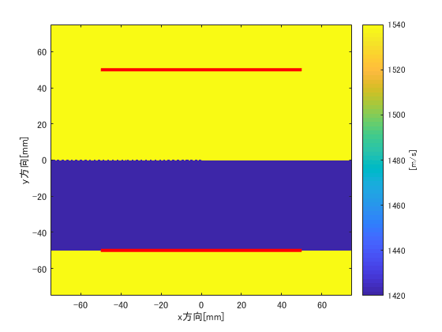
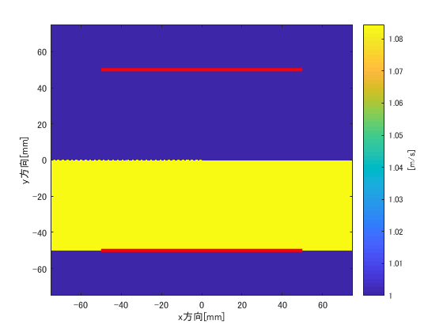
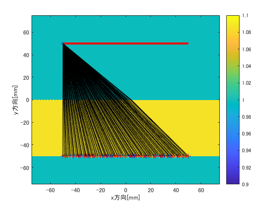

Contents
概要
%EMCL率が16 %, IMCL率が2 %, EMCLクラスタが３つのモデルに対して %平均音速値をbent-rayに基づいて算出するためのプログラム 2018/07/25
初期化
close all;
clear;
clc;
センサ設置
t_size = 100.e-3;%トランスデューサのサイズ t_num = 256;%トランスデューサ数 t_pos = zeros(2, t_num);%センサ位置ベクトル t_pos(1,1:t_num/2) = -t_size/2:t_size/(t_num/2-1):t_size/2 ;%素子水平方向距離[m] t_pos(2,1:t_num/2) = t_size/2; t_pos(1,t_num/2+1:t_num) = t_pos(1,1:t_num/2); t_pos(2,t_num/2+1:t_num) = -t_size/2;
セル設定
cell_num = 2048; p_size = 150.e-3;%計算領域の長さ cell_size = p_size / (cell_num-1); x_grid = -p_size/2 : cell_size : p_size/2; y_grid = -p_size/2 : cell_size : p_size/2; [X, Y] = meshgrid(x_grid, y_grid);%表示用 ds = cell_size/2;%弧長（音線）の微小変化分 t_angle = atan2(t_pos(2,:), t_pos(1,:));%センサ位置角
媒質設定
音速分布
v_water = 1540; v_fat = 1420; w_fat = (-50.e-3<Y) & (Y<0); w_water = not(w_fat); v_dist = v_water.*w_water + v_fat.*w_fat;%表示用 % 屈折率分布 n = v_water./v_dist;%表示用 n_cal = n';%計算用 % 3x3の平均値フィルターをかけスム‐シング % h = ones(5,5)*1/25; % n_cal = filter2(h,n_cal); % 媒質表示1(音速分布) figure; imagesc(x_grid*1e3,y_grid*1e3,v_dist); hold on plot(t_pos(1,1:t_num/2)*1000,t_pos(2,1:t_num/2)*1000,'r','LineWidth',3); plot(t_pos(1,t_num/2+1:end)*1000,t_pos(2,t_num/2+1:end)*1000,'r','LineWidth',3); hold off colorbar; c = colorbar; c.Label.String = '[m/s]'; set(gca,'YDir','normal'); xlabel('x方向[mm]') ylabel('y方向[mm]') % 媒質表示2(屈折率分布) figure; imagesc(x_grid*1e3,y_grid*1e3,n); hold on plot(t_pos(1,1:t_num/2)*1000,t_pos(2,1:t_num/2)*1000,'r','LineWidth',3); plot(t_pos(1,t_num/2+1:end)*1000,t_pos(2,t_num/2+1:end)*1000,'r','LineWidth',3); hold off colorbar; c = colorbar; c.Label.String = '[m/s]'; set(gca,'YDir','normal'); xlabel('x方向[mm]') ylabel('y方向[mm]') 
最速経路をとる素子ペア呼び出し
cd('\\Azlab-fs01\東研究室\個人work\竹内(ひ)\result\2018_02_28_-kwave'); myfilename = sprintf('2018_04_26_Group1ERate5IRate02Num3-2'); cd(myfilename); load('kgrid.mat') i = 16; cd('\\Azlab-fs01\東研究室\個人work\竹内(ひ)\data\kwave\medium\2018_04_26_randomScatter') myfilename = sprintf('Group1ERate%dIRate02Num3-2', i); load(myfilename); cd('\\Azlab-fs01\東研究室\個人work\竹内(ひ)\result\2018_04_27_analyzeLipidModel') myfilename = sprintf('2018_04_27_TOFdata_Group1ERate%dIRate02Num3-2',i); load(myfilename)
単純照射法を用いた最速経路の推定
pos_re = [t_pos(1,:); t_pos(2,:)];%受信素子位置ベクトル for ii = 1:1 %初期条件 pos_tr = [t_pos(1,ii), t_pos(2,ii)];%送信素子位置ベクトル num_angle = 100;%射出角の総数(初期化)：ループごとに増加する condition_1 = (ii<=t_num/2);%送信素子が上部に位置するときTrue condition_2 = (ii > t_num/2);%送信素子が下部に位置するときTrue ind_re = ones(1,t_num/2);%受信素子ペアが見つかればこれら要素が随時0に置き換わる %背景描写用 figure; imagesc(x_grid*1e3,y_grid*1e3,n); hold on plot(t_pos(1,1:t_num/2)*1e3,t_pos(2,1:t_num/2)*1e3,'r','LineWidth',3); plot(t_pos(1,t_num/2+1:end)*1e3,t_pos(2,t_num/2+1:end)*1e3,'r','LineWidth',3); plot(pos_tr(1)*1e3,pos_tr(2)*1e3,'*'); caxis([0.9 1.1]);set(gca,'Ydir','Normal'); colorbar; xlabel('x方向[mm]') ylabel('y方向[mm]') while(1)%走査角度内挿ループ initial_angle = condition_1*linspace(pi,2*pi,num_angle)+... condition_2*linspace(0,pi,num_angle);%初期射出角[rad]：送信素子の属する平板によって角度の範囲が異なる for ind_angle = 1:num_angle pos_ray = pos_tr; %音線位置ベクトル（初期化） num_ray_head = 1; %音線先頭更新回数(初期化) while(1)%音線作成ループ x(num_ray_head) = pos_ray(1); y(num_ray_head) = pos_ray(2); if num_ray_head>1 %この場合分けを行わないと音線方向ベクトルが更新されない． %dx,dy : the change of x and y dx = x(num_ray_head)-x(num_ray_head-1); dy = y(num_ray_head)-y(num_ray_head-1); else dx = ds*cos(initial_angle(ind_angle));%この部分はループの最後に持ってくれば条件分岐を省略できると思う．2018/06/21 dy = ds*sin(initial_angle(ind_angle)); end % det_theta = atan(abs(dy/dx));%音線ステップ方向の角度情報 % if (det_theta < pi/10) % clear x y % break % end ix = round((x(num_ray_head)+p_size/2)/cell_size+1);%ループごとに変化している．切り上げを行っている． jy = round((y(num_ray_head)+p_size/2)/cell_size+1);%音線構築ループの各ステップにおける音線上の点を示すグリッド番号 if (ix <=5 || ix >= cell_num-5 || jy <=5 || jy >= cell_num-5)%音線が想定外の領域に進出した場合，情報を破棄してループし直す． clear x y break end nx = (n_cal(ix+1,jy)-n_cal(ix-1,jy))/2/cell_size; ny = (n_cal(ix,jy+1)-n_cal(ix,jy-1))/2/cell_size;%nx,ny : the partial difference of n detx = (x(num_ray_head)+p_size/2)/cell_size+1-ix; dety = (y(num_ray_head)+p_size/2)/cell_size+1-jy; if detx>=0 ix2 = ix+1; else ix2 = ix-1; end if dety>=0 jy2 = jy+1; else jy2 = jy-1; end lx1 = abs((x(num_ray_head)+p_size/2)/cell_size+1-ix); lx2 = abs((x(num_ray_head)+p_size/2)/cell_size+1-ix2); ly1 = abs((y(num_ray_head)+p_size/2)/cell_size+1-jy); ly2 = abs((y(num_ray_head)+p_size/2)/cell_size+1-jy2); n_inter = n(ix,jy)*lx2*ly2+n(ix2,jy)*lx1*ly2+n(ix,jy2)*lx2*ly1+n(ix2,jy2)*lx1*ly1; DS = sqrt((dx+1/2/n_inter*(nx-(nx*dx/ds)*dx/ds)*cell_size^2)^2+... (dy+1/2/n_inter*(ny-(ny*dy/ds)*dy/ds)*cell_size^2)^2); dsx = (dx+1/2/n_inter*(nx-(nx*dx/ds)*dx/ds)*cell_size^2)/DS*ds; dsy = (dy+1/2/n_inter*(ny-(ny*dy/ds)*dy/ds)*cell_size^2)/DS*ds; pos_ray(1) = x(num_ray_head)+dsx; pos_ray(2) = y(num_ray_head)+dsy; %境界の設定（計算の終了条件） if (condition_1&&(pos_ray(2)<=-t_size/2+ds/2)) || (condition_2&&(pos_ray(2)>=t_size/2-ds/2)) distance2re = abs(pos_ray(1)-pos_re(1,1:t_num/2)); [min_distance2re, I] = min(distance2re); if (min_distance2re < 3.e-4) && (ind_re(I) == 1) %条件分岐用 ind_re(I) = 0; %描写用 x(num_ray_head+1) = pos_ray(1); y(num_ray_head+1) = pos_ray(2); plot(pos_ray(1)*1e3,pos_ray(2)*1e3,'+'); plot(x*1e3,y*1e3,'k'); end clear x y break end num_ray_head = num_ray_head+1; end end if sum(ind_re)==0%全受信素子に対応する音線が見つかっていればここでループを抜ける． break end num_angle = num_angle + 100; end end